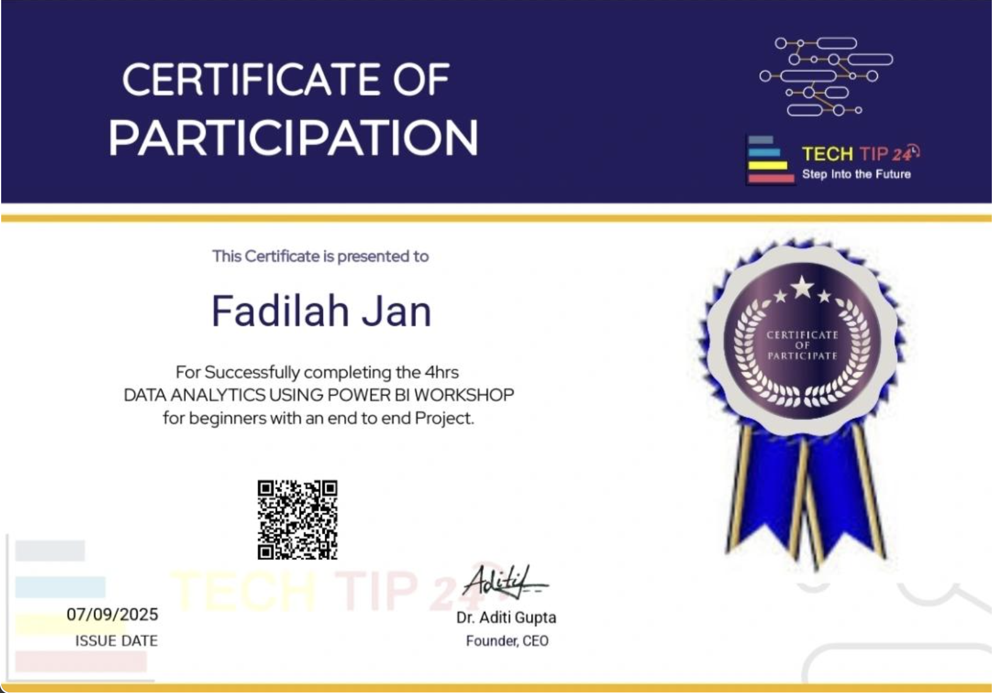
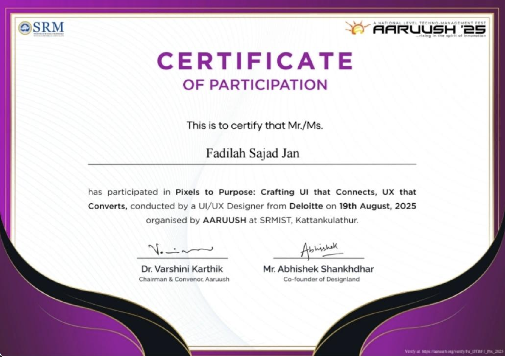

CURRENT
Management Secretary · BizClaw SRMIST Chennai
Supports management and coordination for the student community.
DESIGN × DATA × BUSINESS
Hello, I’m
A BBA Data Science student who brings creative ideas, analytical curiosity, and business thinking into the same room.
I’m pursuing a BBA in Data Science at SRM Institute of Science and Technology, Kattankulathur. I’m interested in the ways data, management, marketing, and entrepreneurship can shape better ideas and experiences.
I enjoy creating visual content, leading creative projects, collaborating with teams, and turning ideas into thoughtful design and communication.
Creative leadership, student communities, internships, and event production.
Supports management and coordination for the student community.
Contributes to a student community focused on entrepreneurship and founders.
Leads visual content and creative work for department initiatives.
Internship experience across digital marketing and AI.
Human resources internship experience with two organizations.
Design Lead — Upheaval 8.0 · Decade Alumni Reunion 2026 · Undergraduate Research Meet 2.0 · Bootcamp on Agripreneurship
Organiser — Commune 2026
Creative, analytical, and business work—documented with context and transparent evidence.
A transparent practice analysis of a 24-month synthetic retail dataset.
Monopoly-themed branding and creative direction for the event identity.
Research project at SRMIST. Findings and methods can be added when ready to share.
Add a reel or project walkthrough here. Select a video for a local preview, then follow the README instructions to include it on the published site.
Visual systems and campaign assets across events, digital channels, and student communities.
Canva · Graphic design · Poster design · Creative strategy · Visual content
Data science · Business management · Marketing · Microsoft Office · Power BI workshop
Teamwork · Leadership · Communication · Creative project coordination
Data Science · Management Information Systems · Business Statistics · Marketing · Financial Accounting
Verified badges, job simulations, workshop certificates, and professional training.
Generative AI Foundations · Training Badge
Issued Mar 18, 2026 · Verify ↗ 02 · GUVI HCLLearn · Level Up · Get Hired · Webinar certificate
Completed Dec 16, 2025 · Verify ↗ 03 · DELOITTE · FORAGEPractical tasks in data analysis and forensic technology
Nov 16, 2025 · View certificate ↗ 04 · DELOITTE · FORAGEPractical tasks in cyber security
Oct 16, 2025 · View certificate ↗ 05 · TECH TIP 244-hour workshop with an end-to-end project
Participation certificate · View ↗
06 · AARUUSH · SRMISTCrafting UI that Connects, UX that Converts
Certificate of Participation · Aug 19, 2025 · View ↗
Professional credential
Internship experience
Additional experience: Human Resource Internships at Subhansh Seva Trust and TopTrove Foundation.
INTERNSHIPS · CREATIVE · ANALYTICS
I’m interested in opportunities where creative work, business questions, and data can come together.
fadilahjan26@gmail.com ↗